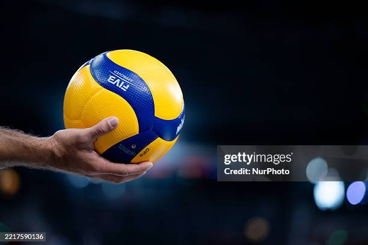

Volleyball

Volleyball 排球
現代比賽用球，採用了創新的 18 片面板設計，搭配特殊的凹點/多紋路表面材質（超纖皮），旨在優化空氣動力學，使排球的飛行軌跡更加穩定，並增強球員的控球能力，減少因汗水造成的滑手。
Outside Hitter(OH) 主攻手 / 大砲
隊伍主要的得分手，通常在四號位進攻，負責接發球和執行大量攻擊任務。
Middle(MB) 快攻手 / 副攻手
隊伍的網前屏障，主要職責是攔網，同時執行各種快攻戰術。

Opposite Hitter(OP) 舉球對角 / 接應二傳
通常在二號位進攻，是重要的攻擊點，分擔主攻手的進攻壓力，並負責後排攔網。
Setter(S) 舉球員 / 二傳手
隊伍的戰術指揮官，負責組織和分配球，將球傳到最適合攻擊手的位置。
Libero(L) 自由球員
專職防守的球員，負責接發球和救球，不能發球、攔網或前排攻擊。
About Me
My hobbies are playing volleyball and working out at the gym. I love the sense of achievement that comes from continuously improving myself and becoming more proficient in the skills required for these sports.
Technical Skills
Athletic ability
90%
Artistic ability
85%
Easygoing
80%
Contact Me
s111416005@stu.ntue.edu.tw
Taiwan, Taipei
0912345678